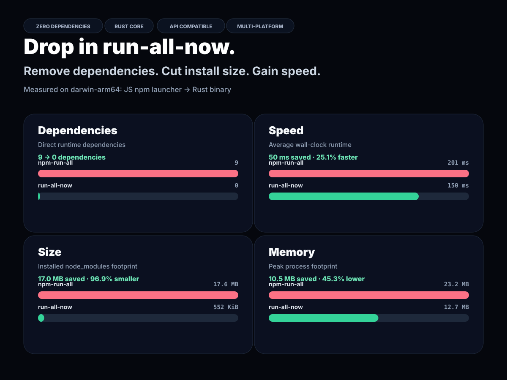

wiki · delivery notes
run-all-now
A zero-third-party-dependency Rust replacement for npm-run-all, packaged for npm with compatible CLI commands and Node API.
Page 1
Problem and outcome
Problem: npm-run-all is ergonomic but old, dependency-heavy, and JavaScript-bound for orchestration.
Outcome: this repo contains a native Rust runner, npm-compatible commands, Node API wrapper, tests, benchmark script, comparison image, and release packaging plan.
- Private GitHub repo created:
ocodista/run-all-now. - One-line product description added to
package.jsonand README. - Comparison chart generated at
assets/comparison-chart.svg.
Page 2
User-facing compatibility
run-s clean lint build
run-p --max-parallel 4 watch:*
npm-run-all clean --parallel build:* --sequential testSupported
Sequential/parallel groups, glob matching, labels, aggregate output, race mode, placeholders, --npm-path, config forwarding, and silent mode.
Kept boring
The CLI preserves npm script execution semantics by calling npm/yarn instead of reimplementing package-manager behavior.
Page 3
Rust core architecture
cli.rsArgument parser compatible with npm-run-all command modes.
glob.rsDependency-free task matching and argument placeholder expansion.
runner.rsParallel scheduler, process groups, output labeling, aggregate output, and failure handling.
json.rsSmall JSON parser for package metadata and API bridge payloads.
package.rsReads package scripts in declaration order.
shell.rsShell-like splitting and quoting for forwarded arguments.
Page 4
Node API bridge
const runAll = require("run-all-now");
await runAll(["clean", "build:*"], { stdout: process.stdout });The CommonJS API writes a small JSON request into a temporary directory, invokes the native binary in API mode, streams stdout/stderr when requested, and resolves with { name, code } results. Failures reject with NpmRunAllError.
Page 5
npm release model
├─ @run-all-now/darwin-arm64
├─ @run-all-now/darwin-x64
├─ @run-all-now/linux-arm64
├─ @run-all-now/linux-x64
├─ @run-all-now/win32-arm64
└─ @run-all-now/win32-x64
The main package has no third-party runtime dependencies. It exposes tiny JavaScript npm bins and a CommonJS API bridge that resolve the matching optional platform package, then execute the Rust binary.
Page 6
Verification and proof

15 unit tests across parser, glob, shell, package, and runner modules.
7 integration tests covering CLI and API behavior.
cargo fmt, cargo clippy -D warnings, npm test, and npm pack --dry-run.